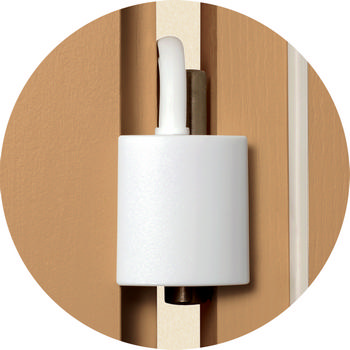

- установите дверной амортизатор, который не даст двери закрыться;
- оборудуйте двери специальными фиксаторами, которые удерживают дверь в одном положении;
- используйте блокиратор ручки дверного замка, что не позволит ребенку захлопнуть дверь;
- не позволяйте ребенку играть с дверями;
- наклейте полимерную пленку на стекло для предотвращения большого количества осколков;
- наклейте картинки на стекло, если оно прозрачное
- Если поврежден кожный покров: рану обработайте дезинфицирующим раствором или перекисью водорода; положите стерильный бинт и забинтуйте;
- Если нет деформации и крови: охладите палец под проточной водой, около часа холодный компресс
- Если есть деформация: незамедлительно покажите ребенка врачу
